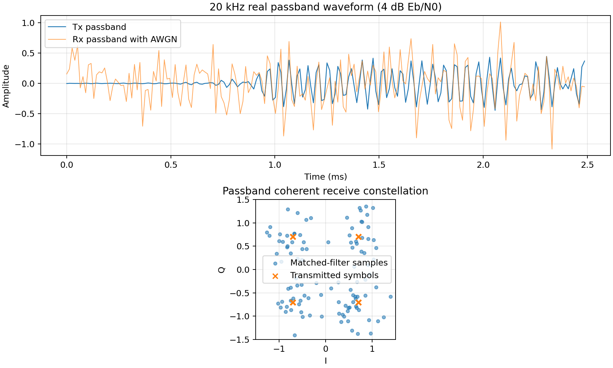
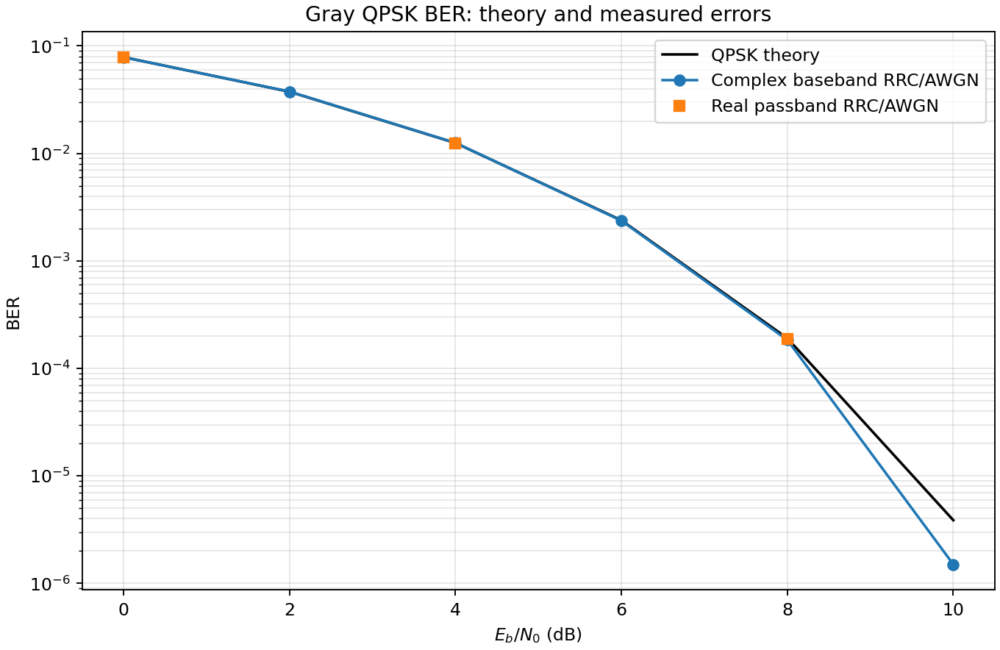
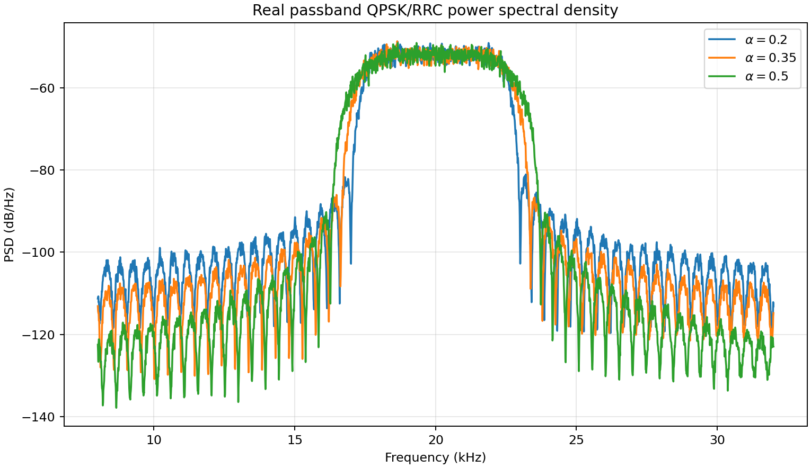
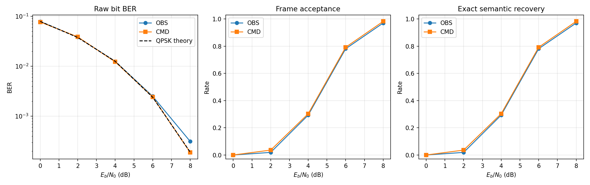
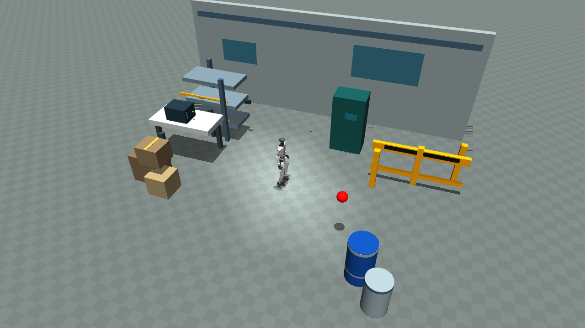

Verified industrial-laboratory simulation · six prop groups · 22 collidable geoms. The route remains clear; this is not obstacle avoidance.
Abstract
Traditional digital-communication demonstrations often stop at bit error rate. This project connects a complete numerically simulated QPSK physical layer to a concrete robotics task. A Unitree G1 extracts a compact target observation from RGB-D images, transmits a 96-bit semantic message over an AWGN channel, receives velocity commands over a second QPSK link, and executes through an existing locomotion policy in MuJoCo.
Communication reliability is measured both at the bit/frame level and at the task level. In the verified fixed-layout 8 dB experiment, 11 of 525 frames were rejected, yet the robot reached its target. This is a software simulation with ideal synchronization, not over-the-air radio or generalized autonomous obstacle avoidance.
DEMONSTRATION
Robot Motion × Communication Replay
Recorded MuJoCo video and the matching 10 Hz uplink/downlink communication events, synchronized using the original 50 Hz policy trace.
REAL TRACE · REPLAY
T + 00.00 s
G1 · INDUSTRIAL LAB · LAYOUT 20261105
Controller—
Target distance—
Heading—
Applied forward command—
Packet events
Select a recorded CRC/preamble rejection to seek the exact time in the corresponding video.
—
Loading communication events…
Loading matching video trace…
The three videos represent separate matched runs, not one run with a changing channel. The graphics show recorded receive decisions. Pausing and seeking also updates the signal display. Replay documentation →
SYSTEM DESIGN
Method
01RGB-DDetect color target, range and bearing
→
02OBS 96 bitQuantized task fields + CRC-16
→
03QPSK uplinkRRC pulse shaping + AWGN
→
04Edge policySearch · Align · Approach · Stop
→
05QPSK downlinkVelocity CMD, TTL and checks
→
06G1 / MuJoCoExisting ONNX policy at 50 Hz
Digital physical layer
Gray QPSK at 4,800 symbols/s (9,600 bit/s), root-raised cosine filtering (α = 0.35), complex-baseband AWGN and matched-filter reception. An independent real-passband verification uses a 20 kHz numerical carrier.
RRC 161 taps · sampling 76.8 kHz · 16 samples/symbol · known timing and carrier
Task-oriented message
A 96-bit frame allocates 16 preamble, 12 header, 52 payload and 16 CRC bits. OBS carries target identity, range, bearing, validity and timestamp. CMD carries velocities, TTL and mode.
10 Hz OBS/CMD links · 50 Hz local motor policy · 200 ms command TTL

Figure 1. P1 numerically simulated 20 kHz passband signal and coherent QPSK receiver constellation.
QUANTITATIVE RESULTS
Experiments
Theoretical physical-layer behavior and recorded end-to-end robot execution are reported separately.

QPSK BER: theory versus simulated baseband and passband.

RRC pulse-shaping: spectral differences across roll-off factors.

Semantic message reliability across channel conditions.

Final industrial environment: fixed layout seed and open passage.
Fixed industrial scene, one G1 seed and one AWGN seed per condition
Communication
Task
Time
Path
Bit errors
Accepted frames
Ideal scheduled messages
Success
26.32 s
3.207 m
PHY N/A
527 / 527
Noiseless QPSK
Success
26.32 s
3.209 m
0 / 50,592
527 / 527
8 dB QPSK + AWGN
Success
26.22 s
3.202 m
11 / 50,400
514 / 525
Interpretation. At 8 dB, all 11 bit-error frames were rejected (7 CRC, 4 preamble). The command-hold mechanism allowed task completion in this run, with no logged obstacle contacts. This is not evidence of robustness across layouts, seeds or blocked paths.
Limitations and scope
The channel is numerically simulated with ideal synchronization; no real RF hardware was used. The G1 controller and locomotion policy are existing components, not a trained VLA or newly learned navigation system. The obstacle-rich scene intentionally preserves a clear route and does not demonstrate autonomous obstacle avoidance. Full robot asset/runtime redistribution is not included; third-party model and media usage rights require review before public release.
Source code, simulation evidence, experiment reports and media hashes are preserved in the repository. Project repository ↗